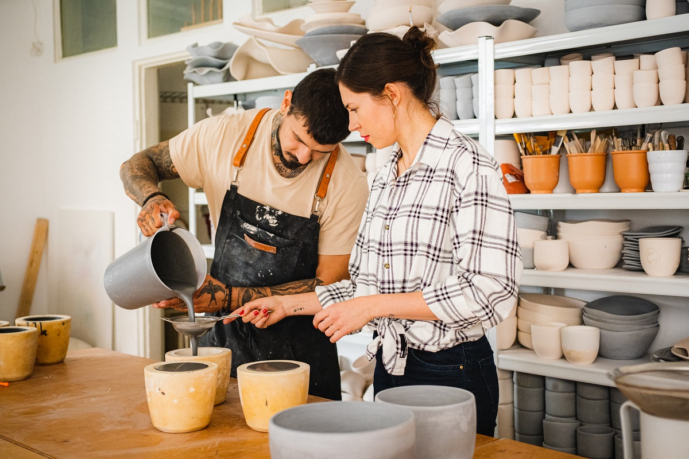

Coraz więcej osób przed trzydziestką porzuca obiecujące kariery w przeszklonych biurowcach na rzecz pracy własnymi rękami. Psycholodzy wskazują na głęboką potrzebę dostrzegania "namacalnych efektów" swojego codziennego trudu.
Zjawisko tzw. "wielkiej rezygnacji" ewoluuje. Zaledwie kilka lat temu młodzi pracownicy masowo zmieniali pracodawców w poszukiwaniu lepszych zarobków i bardziej elastycznych warunków pracy zdalnej. Dziś trend przybiera zupełnie inną formę. Generacja Z i młodsi Millenialsi coraz częściej decydują się na całkowitą zmianę ścieżki zawodowej, wybierając stolarstwo, garncarstwo, piekarstwo rzemieślnicze czy krawiectwo.

Karol (29 lat), jeszcze rok temu był starszym analitykiem finansowym w jednym z warszawskich wieżowców. Dzisiaj prowadzi własną pracownię ceramiki na warszawskiej Pradze. Zapytany o powód drastycznej zmiany w swoim życiu, nie ma wątpliwości.
Socjolodzy zwracają uwagę na zjawisko tak zwanej "pracy wyalienowanej" (ang. bullshit jobs) – pojęcia spopularyzowanego przez antropologa Davida Graebera. Wiele współczesnych zawodów biurowych nie przynosi pracownikom satysfakcji ze względu na ich abstrakcyjny i odrealniony charakter. Przejście do rzemiosła jest w tym kontekście ucieczką w stronę autentyczności.
Zainteresowanie tradycyjnymi fachami widać również w ofercie kursów i warsztatów zawodowych, które przeżywają prawdziwe oblężenie. Listy oczekujących na naukę wyplatania koszy wiklinowych czy tworzenia naturalnych kosmetyków potrafią być zarezerwowane na pół roku do przodu. Nowe pokolenie, wychowane w erze cyfrowej, paradoksalnie szuka swojego miejsca w świecie analogowym.